Fast Build.
Fast Business.
만들어 실현하고 싶은 AI 하드웨어를 중국 선전의 하드웨어 에코시스템과 협력하여 빠르게 프로토타이핑하여 검증하고 양산까지 연계하는 AI Hardware Prototyping & Acceleration 플랫폼입니다.
AI 하드웨어 개발,
왜 어렵고 비싸고 느린가.
Fast.B는 이 7가지 문제를 직접 해결하기 위해 만들어졌습니다.
느리고 경쟁력 없는 국내 하드웨어 검증
국내에서의 하드웨어 검증과 프로토타이핑은 시간과 에너지가 많이 들며, 결과물에 대한 경쟁력 또한 낮습니다.
높은 비용, 낮은 ROI
AI 하드웨어의 구현이 어렵고 비용이 많이 들며, 투자대비 부가가치가 높지 않습니다.
대기업 중심 제조 생태계의 한계
대기업은 대기업 중심의 제조 생태계를 가지고 있어 프로토타이핑이나 소량생산의 경쟁력이 부족하고, 일반 제조기업은 AI와 같은 첨단기술의 이해와 응용에 대한 역량이 부족합니다.
소프트웨어 기업의 하드웨어 확장 어려움
소프트웨어 기업과 기업들은 내부 하드웨어 개발역량과 경험 부족으로 AI 하드웨어로의 핵심 서비스 확장이 어렵습니다.
스타트업 하드웨어 아이디어의 5가지 부족
스타트업들이 가진 하드웨어 아이디어들 대부분은 상품성, 사용성, 혁신성, 기술성, 서비스성이 부족합니다.
더 나은 미래를 위한
AI 하드웨어를 실현한다.
"AI 하드웨어 창발의 생태계를 만들고
AI 산업혁신을 통해 더 나은 내일을 만든다."
Fast.B는
1. AI가 실제 세계에서 구현되고 적용되어 혁신할 수 있게 돕고,
2. AI 하드웨어의 가치와 유용성을 빠른 프로토타이핑을 통해 실현하고,
3. AI 하드웨어 개발과 확산을 통해 우리의 삶을 더 나아지게 만듭니다.
Prototyping
선전 제조 생태계를 활용하여 빠르고 경쟁력 있는 AI HW MVP를 프로토타이핑합니다. 신속한 프로토타이핑과 검증을 통해 시장성을 파악하여 빠른 실패를 실험합니다.
Manufacturing
선전의 믿을만한 파트너들과 함께 제품성, 양산성, 서비스성이 확보된 제품을 시생산하고 검증합니다. 시장성이 확보된 제품은 선전의 다양한 소량 제조 인프라를 이용하여 빠르게 출시합니다.
Expert Network
선전의 산업디자이너 및 파트너들과 협력하여 글로벌 시장에서 선택받고 사업화할 수 있는 제품을 빌드합니다. IP와 디자인을 사전 보호하고 국내·현지 전문가들의 지원을 연계합니다.
Fast.B Innovation
"Hollywood of Hardware"
"Silicon Valley of AI Hardware"
전 세계 IT 제품의 90% 이상이 선전을 거칩니다. 세계 최대 전자부품 시장 화창베이(Huaqiangbei)를 중심으로, 선전은 하드웨어 제조·디자인·양산의 모든 것이 집약된 도시입니다. Fast.B는 이 생태계의 핵심 파트너들과 긴밀하게 협력합니다.
선전 현지 네트워크
중국 선전 현지의 산업디자인·디바이스 전문가 네트워크, 하드웨어 솔루션·개발 네트워크, 소량 생산·제조 전문 네트워크와 긴밀하게 협력하고 최고의 시너지를 위해 역할을 분담합니다.
현지 시장 조사 · 소싱 동반
AI하드웨어 프로토타이핑을 위해 중국 현지 시장조사, 유사 제품 및 경쟁사 조사 분석, 핵심 부품 및 솔루션 소싱, 파트너 및 전문가 연결을 함께 진행합니다.
국내 최고 전문가 코칭
AI·통신·네트워크·센서·디바이스·플랫폼·UX/UI·제조 전문가들이 프로젝트 초기부터 코치와 멘토로 참여하여 단순 하드웨어가 아닌 AI 기반 하드웨어 비즈니스 모델과 전략을 중심으로 경쟁력 있는 구현을 가능하게 합니다.
How We
Work
프로젝트 성숙도와 요구사항에 따라 두 가지 트랙 중 최적을 선택합니다.
검증 & PoC 중심 · 총 약 8주
전문 디자인 & 양산 중심 · 총 12~36주
Team Building & Spec. Review
프로젝트 스펙과 팀 구성을 검토하고 목표·예산·타임라인을 정렬합니다. 최적 트랙을 확정하고 선전 파트너 매칭을 시작합니다.
EVP Build
Engineering Verification Prototype 제작. 하드웨어 핵심 기능 구현에 집중합니다.
Function Verification & PoC
기능 검증 및 개념 증명. 시장 피드백을 빠르게 수집하고 방향을 확정합니다.
Small Batch Production
소량 생산(Small Batch)으로 빠르게 시장에 진입합니다. Track V의 완주 단계입니다.
Verification Track
빠른 기능 검증과 PoC가 필요한 팀. MVP 빌드가 필요한 초기 스타트업에 최적입니다.
- Team Building & Spec. Review (1–2w)
- EVP Build (2–3w)
- Function Verification & PoC (2–3w)
- Small Batch Production (2–4w)
Commercialization Track
전문 산업 디자인과 글로벌 양산 서비스가 필요한 팀.
- Team Building & Concept Review (2–4w)
- EVP Build + Industrial Design (2–6w)
- PoC & DVP Build + UI/UX Design (2–6w)
- SW Dev + PVP Build + Mold Development (4–8w)
- Mass Production (4–8w)
Team & Partners
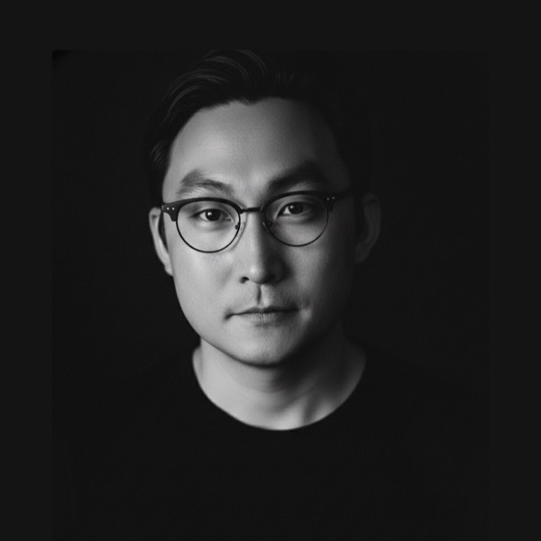
모바일디바이스, AI, 공간컴퓨팅, XR, IoT 분야를 중심으로 미래 기술과 산업 혁신을 연결해온 기술 전략가이자 이노베이션 카탈리스트다. TIME Magazine 'The Gadget of the Year 2007'로 선정된 삼성전자 최초 멀티터치 모바일 디바이스 개발에 핵심적으로 참여했으며, 현재 Future Designers 비저너리와 L!FESQUARE 이노베이션 카탈리스트로 활동하고 있다. 아시아혁신가 네트워크 Pan Asia Network의 공동설립자이며 기술과 혁신에 관한 다양한 저술과 자문을 하고 있다.
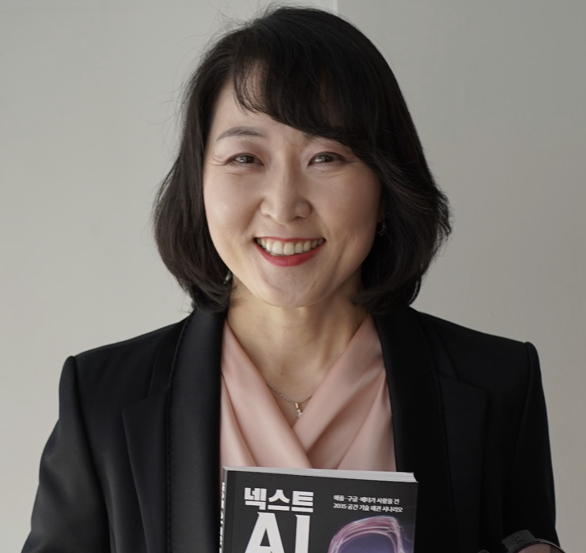
27년 이상의 IT 산업 경험을 보유한 AI, XR, 공간컴퓨팅 분야의 기술 전략가이자 기업가다. 삼성전자에서 모바일 플랫폼 R&D를 이끌었고, SK텔레콤 EVP로서 메타버스 플랫폼 ifland의 상용화를 주도했다. 현재 BoldStep CEO이자 Companoid Labs 벤처 파트너로 활동하며, 130건 이상의 특허와 CES Innovation Awards 심사 경험을 기반으로 글로벌 기술 생태계 자문과 사업 전략을 수행한다.
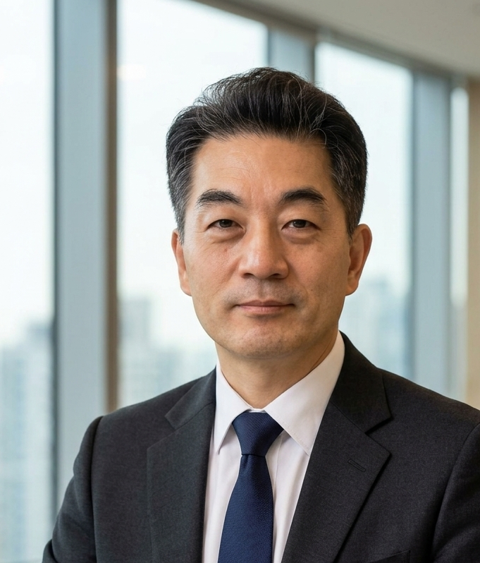
ICT 산업에서 기술 전문성과 사업 리더십을 함께 축적해온 실행형 테크 리더다. 삼성전자 선임 엔지니어로 기술 역량을 다졌고, Nokia Head of Solution으로 글로벌 시장과 솔루션 비즈니스 경험을 쌓았다. 이후 Cretures Inc. CEO를 거쳐 현재 SAFIENCE Inc. CEO로 기업 성장과 기술 혁신을 이끌고 있다. USC 전기공학 석사 출신으로, Fast.B의 기술 전략과 실행 기반을 책임진다.
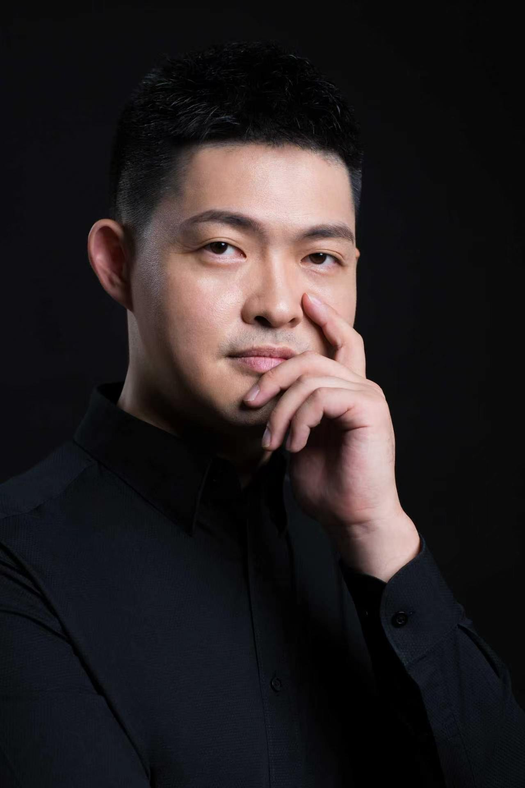
글로벌 산업디자인과 스마트 하드웨어 디자인을 연결하는 중국 선전 기반의 디자인 리더다. 런던 Brunel University에서 석사 학위를 취득한 뒤, 영국과 선전의 디자인·무선기술 기업에서 경력을 쌓았다. 현재 Shenzhen Innozen Design 창업자 겸 CEO이자 Shenzhen Industrial Design Association 부회장으로 활동하며, Red Dot, iF, Good Design, IDEA 등 다수의 국제 디자인상을 수상했다.
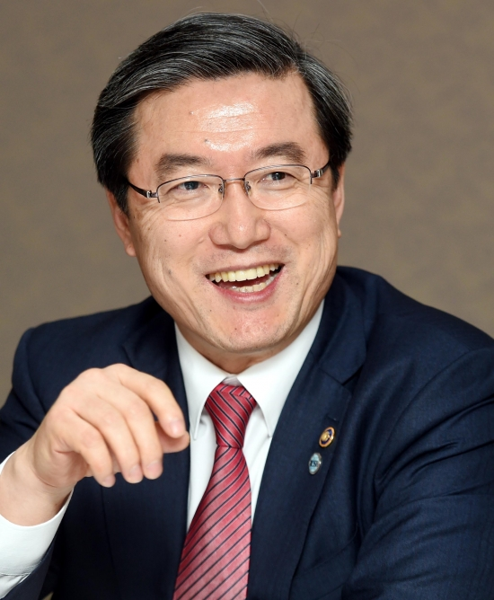
산업, 정부, 학계를 아우르는 글로벌 경영·기술혁신 전문가다. 중소기업청장을 역임하며 중소기업과 스타트업 정책을 이끌었고, 현대오토넷, 본텍, GE Thermometrics Asia Pacific 등에서 CEO로 활동하며 자동차·전자 산업 혁신을 주도했다. 현재 서울대학교 특임교수, 국가과학기술연구회 융합연구위원장, 한국디지털혁신협회 회장으로 활동하며 Fast.B의 전략적 방향성을 자문한다.
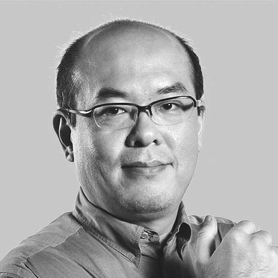
중국 오픈소스 하드웨어와 메이커 생태계를 대표하는 선구자다. 1990년부터 오픈소스 소프트웨어에 기여해왔으며, Free Software Foundation 회원, Apache 프로젝트 커미터, ObjectWeb 이사로 활동했다. 중국 최초의 해커스페이스 XinCheJian을 공동 설립했고, Shenzhen Open Innovation Lab의 Executive Director로 글로벌 스마트 하드웨어 창업자와 선전 오픈이노베이션 생태계를 연결하고 있다.
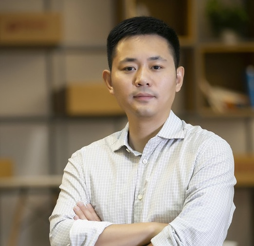
AI 로보틱스 박사 출신의 기술 창업가이자 로보틱스·교육용 AI 하드웨어 분야의 리더다. Airbus에서 차세대 자동화 생산 프로젝트를 이끈 뒤 DFRobot을 창업해 LattePanda, HuskyLens 등 글로벌 메이커·교육 시장의 대표 제품을 성장시켰다. 중국 초기 국가급 메이커스페이스 중 하나인 Mushroom Cloud를 구축했으며, Wu Wenjun AI Science & Technology Award를 수상했다.
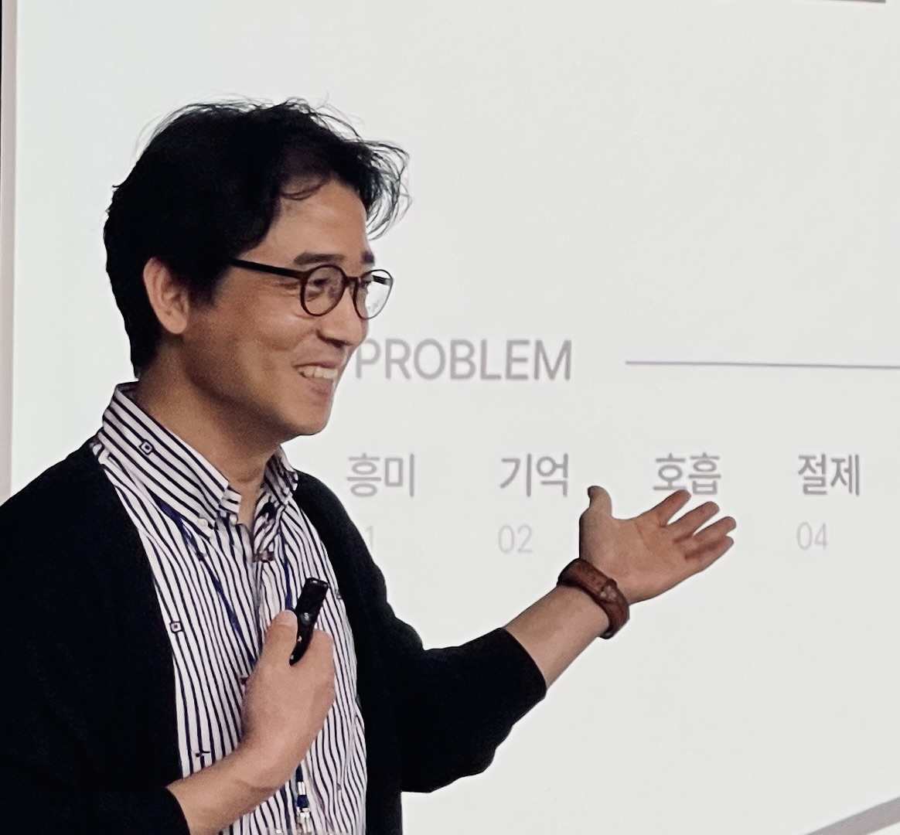
20년 이상의 경험을 보유한 UX 아키텍트이자 글로벌 비즈니스 개발 전문가다. 산업디자인과 HCI 연구를 기반으로 사용자경험을 신제품 기획, PoC 검증, 글로벌 시장 진출 전략으로 연결해왔다. PotentialEyes 대표이자 Seattle Partners 공동창업자로서 한국 스타트업의 북미 시장 진출과 현지화 검증을 지원했으며, LG와 SK텔레콤 등 대기업의 비즈니스 모델 검증 프로젝트도 수행했다.

AI 기반 자율제조, 스마트팩토리, 에너지 절감 분야의 전문가다. 연세대학교에서 융합기술경영공학 박사 학위를 취득했으며, AIRI AI Business Leader와 INEEJI CBO를 거쳐 AI 제조 혁신에 기여했다. 2024년 산업통상자원부 장관상을 수상했으며, 현재 General & Company CEO로서 AX, 스마트팩토리, 탄소저감, BCP 분야의 전문 컨설팅을 제공한다.
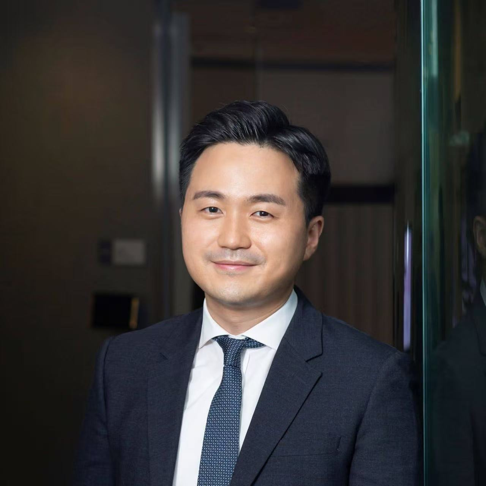
선전을 기반으로 활동하는 AX 컨설턴트이자 AI 상용화 전문가다. 2016년 이후 스타트업부터 Fortune Global 500 기업까지 30개 이상의 AI 프로젝트를 이끌며 생산성 혁신과 신규 사업 기회를 발굴해왔다. 선전에서 활동하는 한국계 AI 전문가로서 실리콘밸리와 중국 현지 창업자 네트워크를 연결하고, AI·로보틱스 공급망 파트너 발굴부터 PoC, 상용화까지 지원한다.
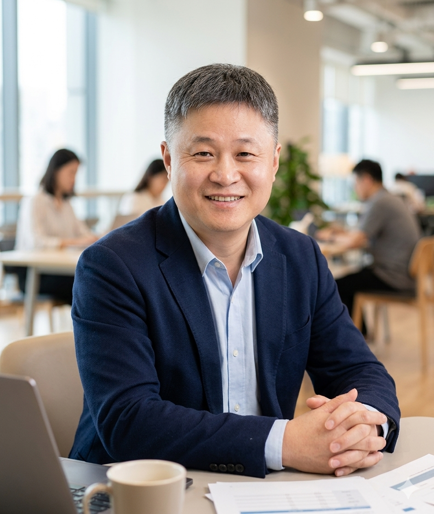
임베디드 시스템, 소프트웨어 개발, FAE 분야에서 20년 이상의 경험을 쌓은 엔지니어 출신 비즈니스 리더다. LG전자 DTV 연구소와 Monotype 등 글로벌 기업에서 핵심 개발과 기술 컨설팅을 수행했으며, 디바이스 드라이버, BLE/RF 통신, 글로벌 텍스트 솔루션에 전문성을 보유하고 있다. Fast.B에서 국내 기술지원과 하드웨어 테크 에반젤리스트를 맡고 있다.
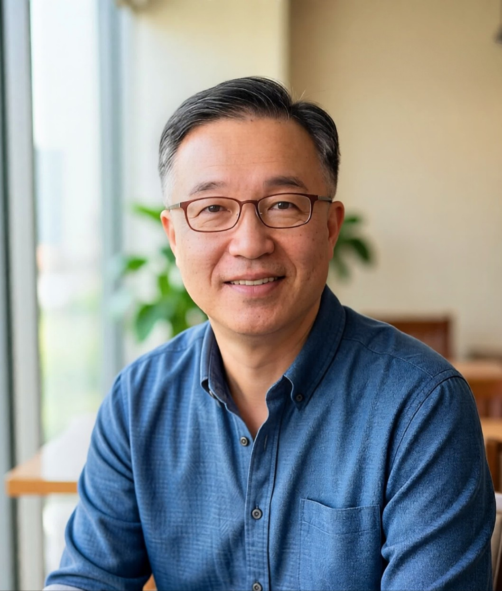
음향기술과 뉴로테크놀로지를 결합해온 30년 경력의 전문가다. 인켈, LG전자, 삼성전자에서 선임연구원으로 활동한 뒤 VK Audio를 창업했으며, iLuv, Eastech, DEXIN, MARQUESS 등 글로벌 브랜드에 음향 컨설팅을 제공했다. 현재 BrainBee CEO로 EEG 기반 힐링 오디오, 자율주행 졸음 방지, 신경질환 케어 등 특허 기반 기술 개발을 이끌고 있다.
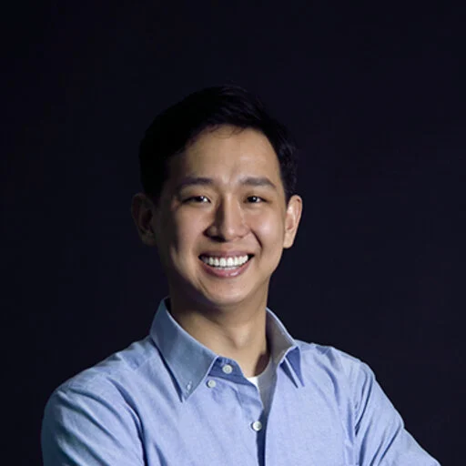
UX, HCI, 메이커 기술을 결합해 새로운 인간-컴퓨터 상호작용 경험을 연구하는 연구자이자 교육자다. KAIST 산업디자인 학사·석사·박사를 취득했으며, ACM CHI와 ACM UIST 등 HCI 분야 최고 학회에 연구를 발표했다. Red Dot, iF, IDEA 디자인상을 수상했고 한국·미국 특허를 보유하고 있으며, 삼성·현대 산업 프로젝트와 NRF 국가 연구 과제에도 참여했다.